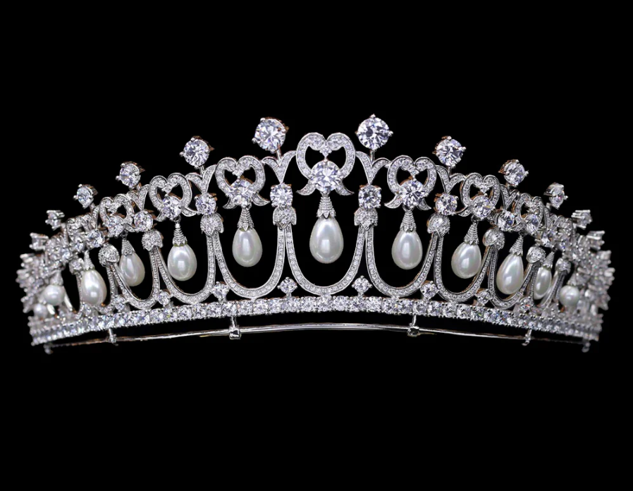
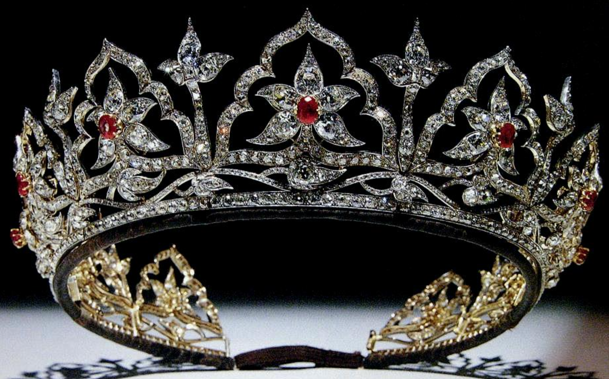
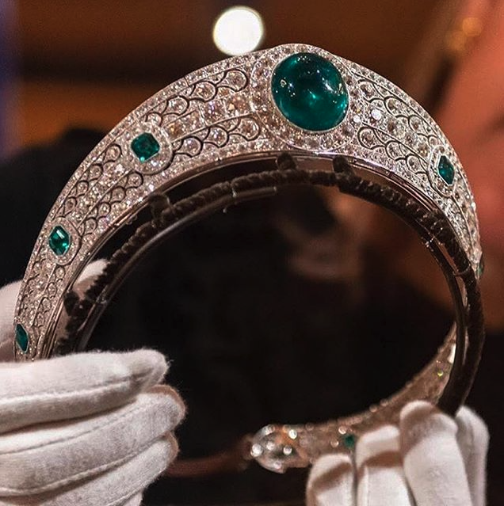
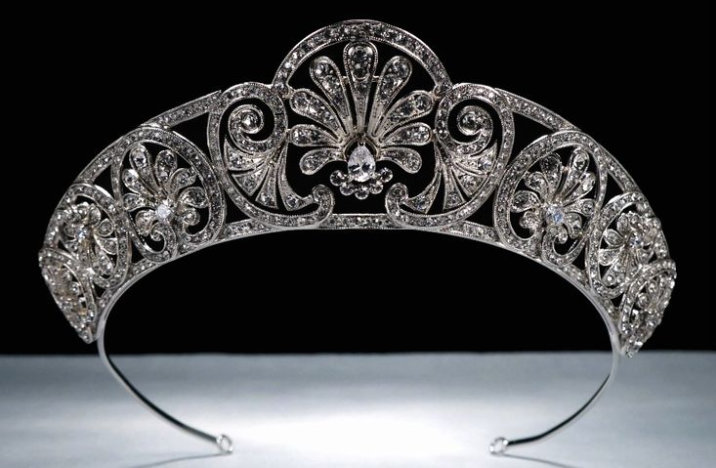
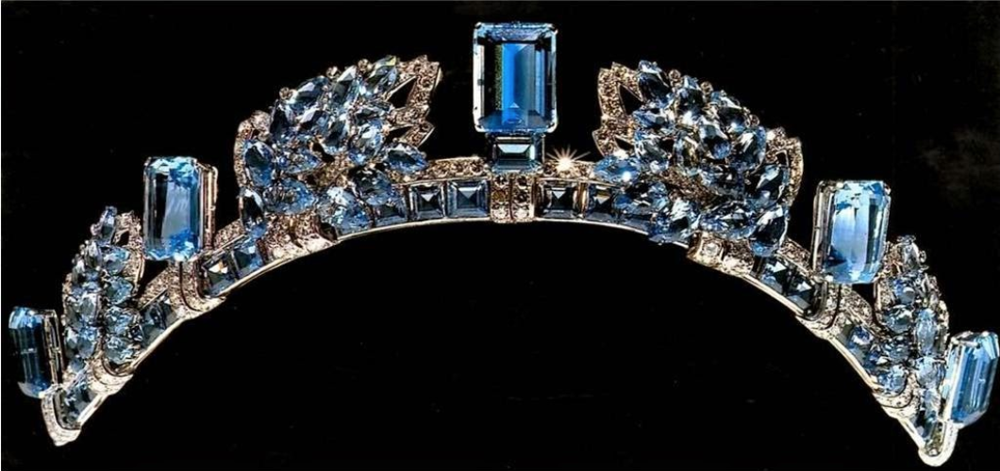
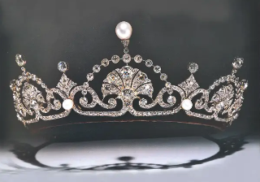
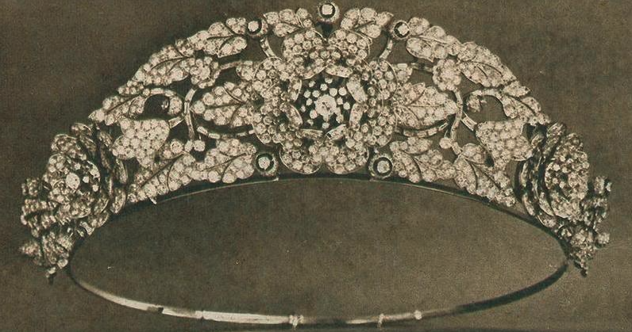
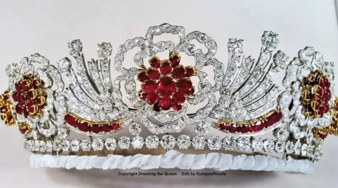

About 71 percent of the surface of the Earth is covered by the ocean, a vast body of saltwater. Oceanographers and nations around the world have traditionally classified the planet's ocean into four separate regions: the Pacific, Atlantic, Indian, and Arctic oceans. Oceanographers began designating the waters surrounding Antarctica as the Southern Ocean in the early 20th century, and National Geographic formally acknowledged this fifth ocean in 2021.
The oceans contain a whopping 97 percent of the world's water. The weather, the temperature, and the availability of food for people and other animals are all significantly influenced by the ocean as a result. The ocean is still a mystery, in spite of its immense size and influence on every living thing on Earth. Humans have never charted, explored, or even seen more than 80% of the ocean. Compared to our own ocean floor, a much larger portion of the moon's and Mars' surfaces have been mapped and analyzed.
Oceanographers have made some incredible discoveries previously, but there is still more to learn. For instance, we are aware that oceanic mountain ranges and deep valleys are similar to those seen on land. If Mount Everest, which is 8.84 kilometers (5.49 miles) tall, were placed in the Mariana or Philippine Trenches in the Pacific Ocean, two of the ocean's deepest regions, its peak would not even touch the surface of the sea. The Atlantic Ocean, on the other hand, is quite shallow because a substantial portion of its bottom is made up of continental shelves, which are portions of the continents that reach deep into the water. 3,720 meters is the average depth of the entire ocean (12,200 feet).
The number of distinct species that live in the water is unknown. Some oceanographers think the number of species is decreasing as a result of the harm that pollution, rising sea temperatures, and other issues are causing to many marine ecosystems. Yet, oceanographers may be in for a lot more pleasant surprises in the years to come. Some scientists believe there are still between a few hundred thousand and a few million undiscovered species in the ocean, which means that more than 90% of the known species may still be undiscovered. There are currently about 226,000 ocean species known to science.
Marcello Calisti, a National Geographic Explorer, has a love for learning more about the ocean's seabed and other ecosystems. Expert in biorobotics, he is creating an underwater exploration vehicle with "legged locomotion," which was modeled after how an octopus travels underwater. His long-term objective is to create robots that can investigate depths that are challenging for humans to access. Future oceanographers from all across the world will have lots to explore and learn because the ocean is so large.
At official events, European royalty frequently appears donning tiaras that resemble the kokoshnik, an ancient Russian headdress. From Catherine the Great's reign in the second half of the 18th century, empresses and grand duchesses in Russia wore this type of tiara. Thanks to Queen Alexandra, who was the wife of King Edward VII and the sister of the Russian Empress Maria Feodorovna, who was married to Alexander III, the tiare russe became fashionable outside of Russia. Even though they never belonged to any members of the Russian royal family, some of those tiaras still have the word "kokoshnik" in their official names.
The diamond Kokoshnik Tiara, with its distinctive white and yellow gold sun rays, is one of Queen Elizabeth II's well-known pieces of jewelry. This ornament served as the model for the "Russian style" jewelry craze that spread outside of the country.The history of the tiara's creation is fascinating. Ladies-in-waiting wanted to give Queen Alexandra an especially exceptional gift in 1888, in honor of the couple's silver wedding anniversary. King Edward VII and Queen Alexandra were celebrating. A replica of the diamond tiara that Alexandra's sister in Russia wore was requested by the woman. The ladies purchased the tiara from Garrard & Co. and donated their jewels in exchange. It might be worn as a necklace as well, like the majority of Russian headpieces; this kind of decoration is known as a fringe tiara.Alexandra loved the gift and frequently wore it to important events, referring to it as her Russian Kokoshnik.
Elizabeth II currently has the tiara, which was passed down from one British queen to the next. The Queen has frequently worn it throughout her reign while making public appearances, just like her mother, grandmother, and great grandmother.
Elizabeth II, incidentally, also owns another fringe tiara from the 19th century. She used to wear it to her 1947 wedding and recently loaned it to her granddaughter Beatrice for her 2020 nuptials.
Although it appears to be a kokoshnik tiara from a distance, it actually has a different shape and a more understated design.
Princess Eugenie, another granddaughter of Elizabeth II, also wore a kokoshnik tiara to her wedding in 2018. This platinum tiara, adorned with enormous emeralds, white and pink diamonds, and Boucheron of France, was constructed in 1919 for Margaret Greville, the daughter of William McEwan, a member of parliament. She left the tiara and her other jewelry to the royal family in 1942; Elizabeth II is currently the owner of the tiara.
The passing of Queen Elizabeth II elicited a variety of emotions. While many grieved the deceased king, NBC News reports that some people want the British government to repatriate several crown jewels to their native nations.
The 530-carat gem known as "The Great Star of Africa," which is thought to be part of the Queen's sceptre, was allegedly stolen from South Africa in 1905 and is worth an estimated $400 million. Also purportedly included in the Imperial State Crown is a 317-carat diamond known as "The Second Star of Africa." The same diamond, known as "The Cullinan Diamond," was used to make both jewelry pieces.
Sir Thomas Cullinan, a South African diamond tycoon, is the name given to the Cullinan diamond. The diamonds must be returned, according to the Twitter account for Africa Archives, which monitors the historical, cultural, and visual records of Africa. The largest clear-cut diamond in the world belongs to Queen Elizabeth II. The 530 carat stone, sometimes known as "The Great Star of Africa," was discovered in South Africa in 1905. The country of origin was South Africa. It is worth an estimated $400 million.Although it was given to the British during colonialism, the British insist that it was given to them as a sign of friendliness and peace. The moniker "The Great Star of Africa" was later changed by the British to "Chairman of Mine," "Thomas Cullinan."
India also wants its diamonds returned. The late Queen Elizabeth, the late mother of the current monarch, wore the 105.6-carat Kohinoor diamond when she was crowned queen consort in 1937. The crown, which is on display at the Jewel House in the Tower of London, was worn once more during Queen Elizabeth's coronation in 1953. It is anticipated that Camilla, Queen Consort, will don the scepter during her husband King Charles III's coronation.
Defeated Londoners must have watched in wonder as William the Conqueror constructed a massive stone tower in the heart of his castle in London in the 1070s. Nearly a thousand years later, the Tower still has the power to frighten and enchant. More than three million people visit the Tower each year as it serves as a keeper of the Crown Jewels, as well as the residence of the Yeomen Warders and its fabled raven protectors. Here, the Ceremony of the Keys and other customs continue to be practiced, along with terrifying ghost stories and accounts of torture and execution. The Royal Mint, the Royal Armories, and even a zoo have all called the Tower home over the course of its lengthy and complicated history.
As the most secure castle in the land, the Tower guarded royal possessions and even the royal family in times of war and rebellion. But for 500 years monarchs also used the Tower as a surprisingly luxurious palace. Throughout history, the Tower has also been a visible symbol of awe and fear. Kings and queens imprisoned their rivals and enemies within its walls. The stories of prisoners, rich and poor, still haunt the Tower.
In the 1070s, William the Conqueror, fresh from his victory but nervous of rebellion, began to build a massive stone fortress in London to defend and proclaim his royal power. Nothing like it had ever been seen in England before. William intended his mighty castle keep not only to dominate the skyline, but also the hearts and minds of the defeated Londoners. The Tower took around 20 years to build. Masons arrived from Normandy, bringing with them stone from Caen in France. Most of the actual labour was provided by Englishmen.
The Tower has been modified and evolved over time to protect and govern the country. William's fortification was enlarged by Henry III (1216-72) and Edward I (1272-1307), who built massive "curtain" (defensive) walls with a string of lesser towers and widened the moat.
Additionally, they made the Tower into the biggest and most powerful "concentric" castle in England (with one ring of defenses inside another). The kings of the Middle Ages constructed magnificent palaces within.
In difficult times, kings and queens utilized the Tower to safeguard both their assets and themselves. Until the 1800s, this was where weapons and armor were created, tested, and kept. The Tower was also in charge of the nation's money supply. From Edward I's reign until 1810, the Tower Mint produced all of the nation's currency. At the Tower, kings and queens hid their treasures and jewels as well. Even today, a garrison of soldiers guards the Crown Jewels.
Infamous tales of royal tragedy and death have also been set in the Tower of London. Henry VI was assassinated here in the Wars of the Roses in 1471, and the Princes in the Tower, the young Edward IV's fiercest foe, disappeared inside its walls in 1483. Two skeletons were discovered at the Tower in 1674. When the bones were reexamined in 1933, it was discovered that they belonged to two boys, who were exactly 12 and 10 years old when the princes vanished.
At the Tower, the kings and queens of medieval times resided in opulent residences. They held religious services in the Chapel Royal, housed an exotic animal menagerie (which persisted into the 19th century), and entertained foreign emperors at grand ceremonial events. A magnificent royal residence was formerly located south of the White Tower, albeit it has long since disappeared. In order to prepare for the coronation of his new wife, Anne Boleyn, in 1533, Henry VIII updated th interior spaces. The night before Anne marched triumphantly through the City of London to Westminster Abbey, she and the King feasted lavishly here. After three years, Anne returned to the Tower and was this time charged with adultery and treason. She was imprisoned in the same opulent location before being put to death.
Men and women have arrived at the Tower for more than 800 years, unsure of their future. Some people stayed for a short while, others for a long time. The Tower rose to prominence as the nation's most significant state jail during the Tudor era. Come here everyone who might pose a threat to the security of the country. Lady Jane Grey, Sir Walter Raleigh, Guy Fawkes, and the future Elizabeth I were all "sent to the Tower." German spies were hauled here and killed even in the 20th century.
The Chapel's most notable claim to fame may be as the final resting place of some of the most well-known Tower captives. This includes three English queens who were executed in the Tower in the 16th century: Anne Boleyn, Catherine Howard, and Jane Grey. The wives of Henry VIII were charged with treason and adultery. Lady Jane Grey, a victim of a scheme to depose Mary I, was just 17 years old when she was hanged for high treason in 1554. The remains discovered in the chancel, including those of Anne Boleyn, were reburied beneath a marble pavement that bore their names and coats of arms in 1876, during the Chapel's restoration.
The Tower has been a popular tourist destination since the 18th century, but the 1800s saw a sharp rise in the number of visitors. The tumultuous and even grisly histories of England captivated the attention of the visitors. The Tower is said to be haunted by ghosts. According to legend, Anne Boleyn frequents the Tower Green location of her execution. It's rumored that Arbella Stuart, Elizabeth I's cousin who starved to death while imprisoned for getting married without the king's consent, still frequents the Queen's House. The 'princes in the Tower' are considered to be two smaller ghosts, and the Yeomen Warders even have a terrifying story about a large bear that occasionally appears and scares guests to death.
As a global heritage site and one of the top tourist destinations in the world, the Tower of London continues to draw tourists from all over the globe. And the Tower embraces a lively community within its walls after the gates are sealed and all the visitors have left. The Yeomen Warders and their families, the Resident Governor, and a garrison of soldiers continue to reside in the Tower of London. Both a doctor and a chaplain are present. There is even a pub there!
Following the passing of Queen Elizabeth II, questions about who will inherit her exquisite collection of jewels have arisen. Queen Elizabeth II was known to have an exquisite collection of jewels, including pricey crowns and tiaras. It is estimated that the Queen has around 50 tiaras in her private collection.
Interestingly, the Queen's personal collection includes a large number of extremely expensive gems, despite the fact that part of her jewelry, including crowns and brooches, is on display in the Tower of London. It is crucial to remember that the ones on exhibit at the Tower of London belong to the Crown and whoever is the monarch, not to a specific person.
It's rare to find a royal tiara that has been worn by four exceptional royal ladies because most become closely linked with just one royal wearer. Queen Mary made the decision to expand her already sizable collection of diadems in 1913 by purchasing a new tiara. She looked to a tiara she had long loved for ideas: the Cambridge Lover's Knot Tiara, which her aunt, the Grand Duchess of Mecklenburg-Strelitz, had sported for years. The Cambridge Lover's Knot Tiara is described in more detail here. Mary chose the next best option because she was unable to inherit or purchase the original tiara: she hired Garrard to create a replica.
In 1913, the new lover's knot tiara was developed. It was once crowned with a row of upright pearls, which made it even higher and more opulent than its current form; these pearls were formerly perched atop the Girls of Great Britain and Ireland Tiara. Later, the tiara's upright pearls were taken out, and a row of brilliant-cut diamonds now lines its top.
The tiara entered the late Queen's jewelry collection in 1953 when she inherited Queen Mary's possessions following her passing. For many years, Elizabeth II wore the tiara without the upright pearls.

She decided to give Diana Spencer, her new daughter-in-law, this tiara in 1981. During her time as Princess of Wales, Diana alternated between donning this and her family's diamond tiara. The sparkler may be seen in several well-known pictures of the princess. (There were rumors that she suffered from headaches because of the weight of this tiara, which is why she frequently wore her family's tiara.)
Most sources agree that Diana gave the tiara back to the Queen after their 1996 divorce. The Princess of Wales received the tiara, not Lady Diana Spencer, despite the fact that the Queen gave it to her daughter-in-law. Diana reportedly gave up the tiara when she gave up that title. She was permitted to keep private presents but not official ones, and it appears that this tiara was one of them. The tiara had been put back in the palace vaults by the time of her death in 1997.
A new British princess has started donning the tiara in the twenty-first century. The Princess of Wales, Diana's daughter-in-law, debuted the tiara at a diplomatic reception in December 2015, and ever since, it has become her most-worn sparkler.
There are few items with a higher level of royal pedigree than this tiara. The only one of the four tiaras that Albert designed that is still in the possession of the main branch of the British royal family is the one that was worn by Queen Victoria and was also created by her beloved Albert. The Prince Consort was inspired to create the piece after observing gems with comparable motifs during the Great Exhibition, a historic occasion that proved to be possibly his greatest royal legacy. The jewelry features arches and lotus blossoms that are inspired by eastern designs. According to a statement on the website of the Royal Collection, Albert "had been greatly impressed by the Indian jewels presented to the Queen by the East India Company at the conclusion of the Great Exhibition". These jewels served as an inspiration for the circlet's Moghul arches and lotus flower patterns.
In 1853, Garrard put Albert's plan into action. Opals, a particular favorite of Albert's, were put in the heart of the lotus components in this tiara's original design. The family's collection of diamonds was utilized to create the tiara, which led to a dilemma soon after the item was created. A sizable portion of the diamonds in the tiara had to be moved to Germany after the Hanoverian branch of the family obtained the legal right to the late Queen Charlotte's jewels in 1858. Other diamonds, some newly purchased and some taken from other royal jewels, were substituted for them.

After Albert's death in 1861, Victoria rarely wore ornate tiaras like this one. The tiara was left to the crown and designated particularly for use by upcoming queens and queen consorts when she passed away forty years later. Queen Alexandra, Victoria's daughter-in-law, was the next in line to don the tiara. She had the center stones changed to rubies because she didn't share Albert's love of opals and actually believed they were unlucky. The rubies were Burmese rubies that had been gifted to Victoria in the 1870s, and they had been in the family's vaults almost as long as the tiara. They also had a true connection to the eastern borders of the kingdom. Additionally, Alexandra had the circlet's size slightly shrunk.
Oddly enough, despite Alexandra's painstaking efforts to repair it, neither she nor her tiara-loving successor, Queen Mary, were reportedly ever photographed wearing the tiara. It seems utterly inconceivable that Mary would disregard a big tiara while constantly creating and recreating the other items in the family collection. It was the only tiara the Queen Mother wore in her later years, along with the Boucheron tiara from the Greville inheritance.
Prior to the Queen Mother's passing, the Victoria & Albert Museum in London held a significant tiara display that included the tiara. The tiara has only been seen out in public once since then. Three years after her mother's passing, Elizabeth II selected it for a state visit to Malta in 2005. Since that time, she hasn't been pictured wearing the tiara. Maybe the sentimental connections to her deceased mother are just too much? Perhaps she simply dislikes wearing it?
Whatever the cause, there's a growing possibility that the tiara may once again be kept in the vaults awaiting a new queen to don it.
We now know that the black tin trunk that was sent to Buckingham Palace in 1943 included at least two diadems in addition to the diamond and emerald tiara. The deceased Dame Margaret Greville left the collection of gems in the trunk to her friend, Queen Elizabeth (the Queen Mother). Elizabeth made the Greville Tiara, the other tiara from the bequest, one of her hallmark jewels, but she never appeared in public wearing the emerald kokoshnik for reasons that are unknown.
It's possible that the Queen Mother simply didn't like kokoshniks. Another tiara in her collection was a kokoshnik, the Persian Turquoise Tiara, which had been changed to lose the traditional halo form. She also changed the Greville Tiara's top line so that it no longer resembled a classic kokoshnik. Of course, it is also plausible that Elizabeth did wear the tiara in private, but there is no textual or visual proof of that. The tiara was deposited in her royal jewelry collection in 1943 and remained there until her passing in 2002, that much is certain. The late Queen, who received the jewel at that time and has never worn it in public, became the new owner.

However, there are references that show Mrs. Greville actually wore the tiara after purchasing it in the years following World War I. Pam Burbidge quotes various newspaper accounts from the 1930s in The Maggie Greville Story that mention Maggie wearing "her empire-shaped tiara of diamonds and emeralds." One of those tiara appearances is said to have occurred during the reception for the Duke and Duchess of Kent's wedding in 1934. Additionally, according to Burbidge, a photograph of Maggie wearing the tiara that was captured in 1937 during a concert at the Austrian Legation in London has also been discovered in a German archive.
The tiara is a gorgeous illustration of Art Deco style from the 1920s. The kokoshnik's sleek platinum and diamond lines are broken up by scalloped parts that mimic the circular cabochon shape of the piece's core cluster of emeralds. The enormous emerald weighs 93.70 carats. For a total of thirteen emeralds in the piece, six more (faceted) emeralds are set at regular intervals on either side of the tiara, which tapers delightfully as it nearly encircles the wearer's head.
The tiara was undoubtedly produced in Paris by Boucheron, although the precise date it was put together is up for contention. The tiara was produced in 1919, according to records kept by the Royal Collection. Vincent Meylan, a royal jewelry historian from France, disagrees. He discusses the customer relationship between Mrs. Greville and the jewelry store in his 2009 book on the Boucheron archives. He mentions the list of purchases Maggie made from the company and states, "En 1921, c'est un bandeau de diamants orné d'une émeraude de 93.70 carats"—"in 1921, it was a diamond bandeau adorned with a 93.70-carat emerald."
The book also features a black-and-white photograph of the tiara, which was the only image of the item until its reemergence nine years later. Meylan had access to the company's archive while writing his book, but it's possible that the Royal Collection also had access to those records when researching the item for their own records. The Diamond Peardrop Earrings in particular have raised concerns for The Royal Collection concerning some of Meylan's other assertions regarding the origin of the Greville jewels.
The only other occasion the tiara has been worn in public is at Eugenie's wedding. In 2019, it was on public display at Windsor Castle as part of an exhibition of the wedding's attire and jewelry; however, it has since been placed back in the vault. Because Eugenie chose not to wear a veil on her wedding day, the tiara, which is truly magnificent, was able to make a stunning statement. We can only hope that it won't be another 75 years before another royal wears it once more!
While Queen Mary was involved in the creation of many tiaras, her diamond honeysuckle tiara is one of her most well-known commissions. For a long time, the tiara's provenance was a little hazy. Some people believed that the object came from the estate of Queen Alexandra's sister, Tsarina Maria Feodorovna of Russia. However, despite the fact that the piece's shape resembles some Romanov tiaras in the kokoshnik style, that was not the case. Actually, shortly after becoming queen, Mary herself ordered it.
E. Wolff and Co. created the tiara on Garrard's behalf. The Cambridge Lover's Knot, the Girls of Great Britain and Ireland, and the Connaught Diamond (now a part of the Bernadotte collection in Sweden) are just a few of the notable tiaras they also created for the family. The honeysuckle tiara's original design, finished in the beginning of 1914, had a taller central part; Mary later had it trimmed to its current design. The County of Surrey Tiara, which had been deconstructed and its royal diamonds recycled, also provided some of the diamonds for the Girls of Great Britain and Ireland Tiara.

Since its inception, the tiara has been a flexible design because of its central element, which can hold a variety of gemstones. The Cullinan V diamond, a sapphire and diamond decoration, and a diamond element with a pink stone were the original intended fits. Although the pink stone has been mistakenly identified as a pink topaz, it is actually a kunzite, which was only discovered a decade before the tiara was created.
Despite the fact that the tiara could be worn in a variety of ways, Mary didn't really keep it for very long. In 1935, when Lady Alice Montagu Douglas Scott wed Prince Henry, Duke of Gloucester, she gave the tiara to her new daughter-in-law. But before Mary handed the tiara away, she had a replacement diamond piece made to match its center that also has a honeysuckle design theme.
The new diamond honeysuckle component was given to Alice along with the tiara, while the Cullinan V, sapphire element, and kunzite element remained with Mary. After Mary's passing in 1953, Alice received the kunzite element. The three stones that are still present with the tiara today are the honeysuckle, kunzite, and emerald. It's unclear exactly where the third choice, which is currently an emerald and diamond set, fits into the picture.
Princess Alice later presented the sparkler to her own daughter-in-law Birgitte, who is now the Duchess of Gloucester, and who has worn it for a number of years in all of its guises. If you're concerned that the pink kunzite in your tiara will clash with your red gown, you can always switch out the central element because having a convertible piece makes the tiara compatible with various colors of gala costumes.
The platinum-set diamond and aquamarine tiara was created by Cartier. Large, emerald-cut aquamarines are intermingled with pinecone-inspired components all along the tiara, which swooped low on the wearer's head. It was supposedly ordered by Anne's great-grandfather, King George VI, as a gift for his wife, Queen Elizabeth (the Queen Mother), on their wedding anniversary. That April, Bertie and Elizabeth marked their 15th wedding anniversary. Elizabeth needed more tiaras and gala jewels as queen consort than she had as the Duchess of York because they had been crowned less than a year ago. The design complements Cartier's 1930s style nicely as well.
It may seem strange to choose a tiara with a pinecone (or "pineflower," as it is commonly known) design, but I believe it makes sense to have a tree-related emblem in a wedding anniversary tiara. Elizabeth was the steadfast, solid support for her husband, helping to uplift and steady him amid the turbulent abdication and accession process.

Before World War II broke out in 1939, Elizabeth had a limited number of occasions to wear the aquamarine tiara. Even though she was seen wearing the tiara in public photographs after the war, it never became her favorite accessory. She is shown wearing the tiara in the photo above, which was taken in July 1951 at Covent Garden for a gala performance of Frederick Ashton's Tiresias that was organized to raise money for the Sadler's Wells Ballet Benevolent Fund. She wore diamond jewelry with the tiara, including Queen Victoria's diamond bracelet, earrings, and necklace from her coronation, as well as her own. Happily, if you look closely, you'll also see another jewel pinned to her clutch bag—her Aquamarine Art Deco Brooch. There are several intriguing design similarities between the brooch and the tiara.
The aquamarine and diamond tiara was given as a wedding gift by the Queen Mother to her granddaughter, Princess Anne, in November 1973. She wore the tiara pictured above at a reception hosted by West German President von Weizsäcker in July 1986 at the ambassador's residence in Belgrave Square. She is also sporting a number of intriguing other pieces of jewelry, such as a contemporary diamond necklace, a pair of earrings that appear to be set with aquamarines, a brooch that could be in the form of a grasshopper or cricket, and a pearl bracelet with a diamond and blue gemstone cluster clasp.
The tiara's sides had been shortened by Anne. One of the rectangular aquamarines now occupies the piece's center place in place of the central aquamarine and diamond element.
The tiara's focal point was transformed into a brooch to be worn on clothing. In this image, which was taken in June 2014 during a garden party at Buckingham Palace, Anne is wearing the diamond and aquamarine brooch that is fastened to her jacket. She also sports a single string of pearls with her diamond and aquamarine pendant strung on them. I've often wondered if the components of the tiara that were eliminated when it was updated were also used to create the pendant in the Art Deco style.
Even today, Anne occasionally dons the tiara for formal occasions.
The Lotus Flower Tiara was created by disassembling the Garrard necklace. The Queen Mum was the first monarch to don this tiara, which gets its name from the lotus flower (or papyrus leaf) decorations that predominate the design. When she made the sparkler, she took a cue from her mother-in-law, who had used a necklace that had been given to her as a wedding present in 1923. She received the diamond and pearl necklace from her future husband, the future George VI, who had bought it from Garrard. It had meander and festoon motifs.
Elizabeth nevertheless made the decision to disassemble it and repurpose the diamonds elsewhere. Garrard broke up the necklace and utilized the diamonds and pearls to make this tiara just six months after she acquired it. Perhaps Bertie had picked up this trait from his mother—not to get upset when diamonds are given, broken up, and used again. Nevertheless, Elizabeth wore the tiara in a number of photographs that were later widely used in the advertising for the 1937 coronation, despite the fact that some illustrators used a little artistic license in their rendering of the accessory.

This is one of the rare tiaras from the 1920s that looks immaculate when worn either high atop the head or low across the forehead, as is customary today. Princess Margaret, the second wearer of the tiara, employed the sparkler in this manner. Just before she wed Antony Armstrong-Jones in 1959, Margaret received the tiara from her mother. It soon joined the Poltimore as one of her most frequently worn headpieces.
Margaret lent the tiara to a third generation in 1993. The tiara was worn by Serena Stanhope, her new daughter-in-law, when she married Margaret's sole child, Viscount Linley. This tiara was not one of the items that Margaret's daughters auctioned off after her passing in 2002; in fact, the Poltimore was the only one of Margaret's tiaras that was sold.
For many years, those who loved jewelry conjectured about who would own the tiara once Margaret passed away. Many people believed that the Linley family may have inherited the tiara from Margaret since Serena Linley wore it to her wedding. But to everyone's surprise, the Duchess of Cambridge chose to wear the tiara to the yearly diplomatic reception in December 2013 and a state banquet in 2015 for the President of China. It appears that Margaret, either prior to her passing or in her testament, gave the tiara back to the royal vaults. A completely new generation of Windsor ladies are now enjoying the Lotus Flower, ensuring its continued existence.
The Burmese Ruby is the sole significant ruby tiara worn by the late queen in addition to the Oriental Circlet, and it has generated some debate among tiara enthusiasts worldwide. The piece's design can be partly blamed for its polarizing nature. This tiara was made using stones from another tiara that had been disassembled, just like many other pieces.

The Nizam of Hyderabad Tiara, a diamond flower headpiece that the queen received as a bridal present, served as the lamb sacrifice in this situation. The dismantled tiara is pictured to the right and was worn by the late queen before it's conversion. The Nizam, an Indian emperor, ordered Cartier to let the princess choose any item from their collection as her gift. I assume it would be similar to the royal version of today's gift card to your preferred retailer.
Elizabeth visited Cartier with her equal gift card in hand and chose a floral necklace and tiara from the 1930s. All of the components were made of diamond, and the tiara had pieces that could be taken off and used as brooches. Early in her reign, she wore the tiara out in public, but in the early 1970s, she had it taken apart. The diamond and ruby tiara that we're looking at today was created with the diamonds. (She retained the necklace and the removable brooches)
It's a little strange that the Queen required a new ruby tiara. She was supposed to inherit all the jewels that had been recognized as "heirlooms of the crown" by the previous kings and their spouses when she ascended to the throne in 1953. The Oriental Circlet, which was created for Queen Victoria and then redecorated with rubies by Queen Alexandra, is part of this collection.

However, Elizabeth's mother's favorite tiara was the circlet. A young widow in her 50s, the new Queen Mother had decades of regal responsibilities ahead of her. The Queen chose to allow her to keep the circlet (along with a few other crown relics) as opposed to taking it from her mother and replacing it with other jewels. Elizabeth didn't inherit (or start wearing) these items until 2002 because most of them were kept by the Queen Mother for the remainder of her life. She has only ever worn the circlet once thus far.
Garrard created the brand-new ruby tiara in 1973. Elizabeth received the rubies from the Burmese people as a wedding gift, and they were also used in the creation of the new item. The exact number of rubies in the gift was 96, and they are all currently put in the tiara. They wanted to make sure that Elizabeth remained healthy since the Burmese people think that rubies may shield the wearer from the 96 ailments that can afflict the human body. If you are familiar with English history, you will recognize a heraldic rose that blends white and red petals as the Tudor rose. The rubies and diamonds were placed in a succession of rose designs.
In the end, the tiara is significantly more contemporary than many items in the Windsor collection, and many people appear to not particularly like it. Although it has been a while since we last saw this one in public, it was a longtime favorite of the Queen, so I wouldn't completely rule out a return at a future gala or state dinner.
This is a longer card with supporting text below as a natural lead-in to additional content. This content is a little bit longer.
The matching ensemble to the Sapphire Wave Tiara. Click here to find out what happened to this beautiful necklace.
This suite of rubies used to make up a full Ruby tiara. This set is currently up for auction and can be viewed here.
Otherwise known as Queen Mary's Sapphire Sunray Bandeau Tiara. Click here to find out how this beautiful Russian tiara came into the hands of the English Royal Family.
This is a longer card with supporting text below as a natural lead-in to additional content. This content is a little bit longer.
This is a longer card with supporting text below as a natural lead-in to additional content. This content is a little bit longer.